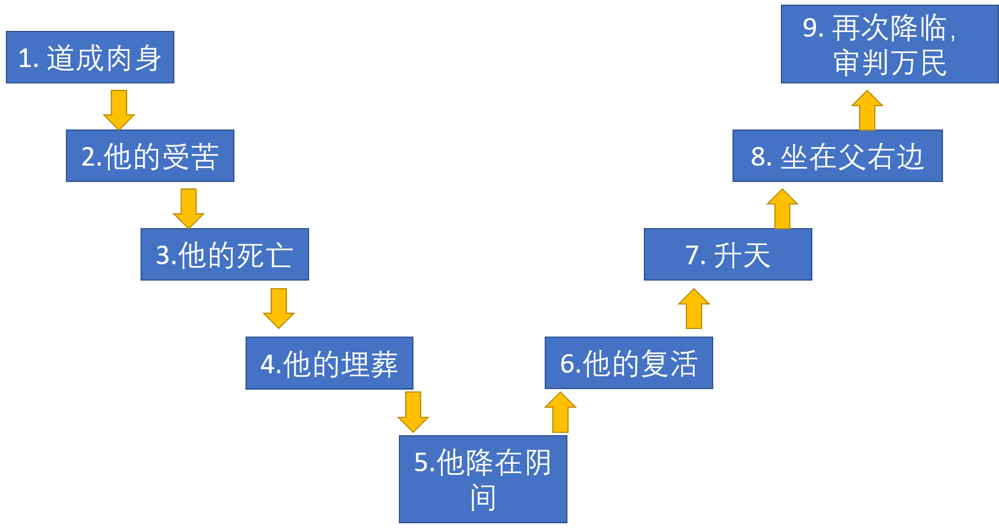
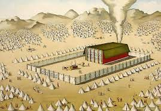

耶稣基督的道成肉身

耶稣基督的道成肉身
总纲
- 何谓道成肉身（what is incarnation?）
- 道成肉身的必要性（why？）
- 耶稣卑微的出生（how？）
- 应用
复习 - 基督的降卑与高升的九步

问题
- 请问哪些步骤可以归纳为耶稣基督的降卑，哪些是耶稣的高升？
- 耶稣基督的降卑与高升是指着祂的神性还是人性？
复习 - 耶稣取了人性
- 耶稣基督取了人性，并成了罪的背负者。
- 身为中保，耶稣就必须进入到有罪的地位中并承担上帝对罪的所有愤怒。
- 在完全满足了上帝的律法以及为罪付上完全的代价之后，基督才能将他的子民从受难和刑罚中释放出来。
何谓道成肉身 (incarnation)
- 提摩太前书3：16a 大哉！敬虔的奥秘，无人不以为然，就是：上帝在肉身显现。
- 神的第二个位格（耶稣基督）取了人性（而不是从神性转变成人性），由童贞女所生，并继承了各样肉身上的软弱和不足，承受软弱、悲伤、疼痛和苦难，只是他没有犯罪。
- 道就是（was)神 （约1:1)...万物是借着祂造的(约1:3)； 道成了（became）肉身，居住在我们中间(made his tabernacle)。
何谓道成肉身 (incarnation)-神人二性

- 透过道成肉身，耶稣成了真正的会幕。
希伯来书9：11-12 但现在基督已经来到，做了将来美事的大祭司，经过那更大、更全备的帐幕，不是人手所造，也不是属乎这世界的。 12 并且不用山羊和牛犊的血，乃用自己的血，只一次进入圣所，成了永远赎罪的事。
- 道成肉身成就先知的预言：
- 创世纪3：15,彼得前书1：10-12
- 祂是神的荣耀的光辉（以赛亚书60：1）
- 却同时也是耶和华受苦的仆人（以赛亚书52-53）
- 在基督里，圣洁的神的荣耀完完全全的居住（dwell）在祂的肉身里。
- 耶稣在世上、复活后和直到新天新地，祂都不曾放下祂的神性和人性。
道成肉身的必要性
- 因着神的圣洁与公义，罪的工价乃是透过血的赎价来偿还。
- 只有身为中保的耶稣基督，才能透过祂在肉身上经历的死亡，献上那完美的挽回祭。
- 旧约的预言必须实现（诗篇45：6-7、以赛亚9：6、弥迦书5：2，4）
道成肉身的必要性
加尔文-透过道成肉身：
- 耶稣降在人间，是为了我们准备天上的居所
- 唯独见那成为比天使小一点的耶稣...要领许多的儿子进荣耀里去（希伯来书2：9-10）
- 耶稣取了可朽坏的肉身，是为了将永生赐给我们
- 耶稣背负了罪，却透过他的死里复活使我们得以成义
耶稣卑微的降生
威斯敏斯特信条第8章:上帝的儿子，三一上帝的第二位格，既是真实和永恒的上帝，与父同质同等，当日期满足的时候，就取了人性及其诸般基本的禀赋和共有的软弱，只是没有罪；所以，祂因着圣灵的权能，在童贞女马利亚腹中成孕，从她取了人性 。
耶稣卑微的降生
基督降生在这个世界是一种极大的降卑:
- 祂作为有依赖性的受造之物降生在罪恶的世界中,感受到罪的后果⸺软弱、疼痛和苦难
- 耶稣出生在卑微的马棚里，成长于一个贫乏的家庭中。
- 耶稣为童女所生，亲身经历了一个人类在母腹中生长和出生的过程。
- 降卑的意思不是神限制或放下祂的能力（kenotic theories），而是祂暂时隐藏祂的神性(divinity)
耶稣为童贞女所生
基督由童女所生对祂成为我们的救主是至关重要的:
- 证明祂是完全的人，并且是亚伯拉罕的子孙，大卫的后裔。
- 实现旧约的预言-以赛亚7：14 因此，主自己要给你们一个兆头，必有童女怀孕生子，给他起名叫以马内利。
- 玛利亚由圣灵感孕(conceive),证明耶稣的诞生是上帝奇妙的作为，并且祂是没有带着原罪。
应用
- 学习耶稣的谦卑
- 单单接受耶稣为唯一中保和救主
- 明白上帝对我们的爱
- 以基督为我们的兄长
海德堡要理问答：36问

问：你从基督圣洁的成孕和出生得了什么恩惠呢？
答：祂作了我的中保 ，并用祂的纯全和圣洁，在上帝面前遮盖我的罪，我本是在罪中成胎的。